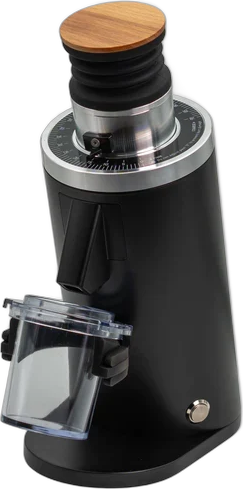
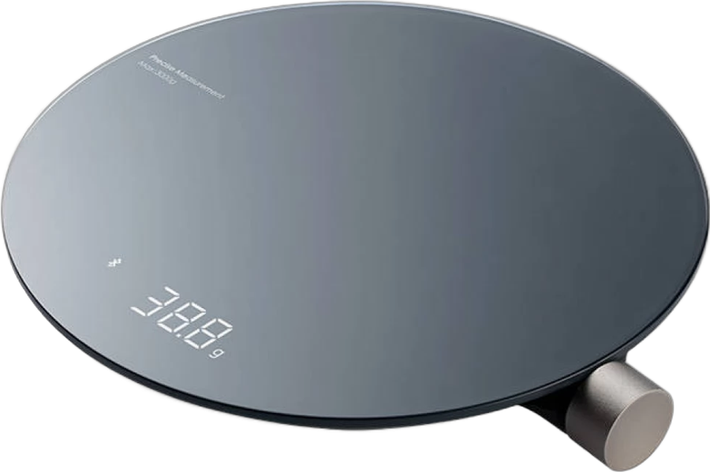
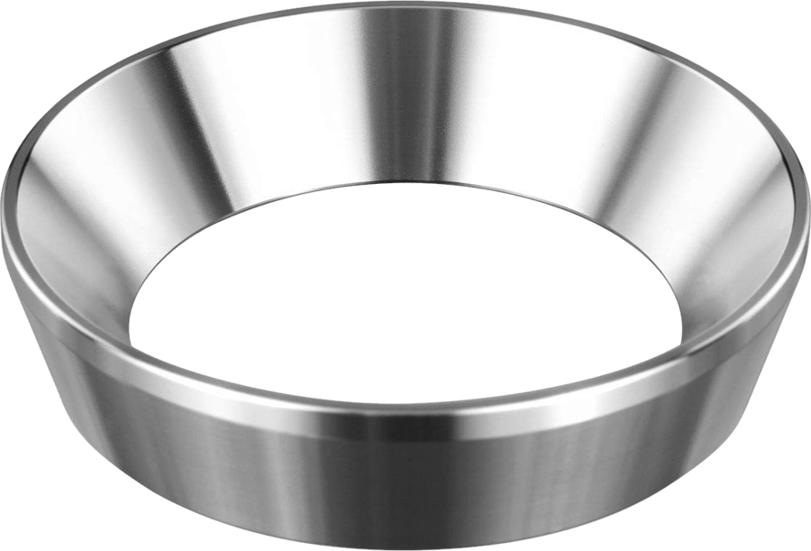
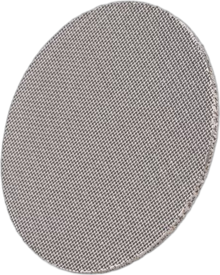

Coffee
18g
A double shot pulled over hot water, so the crema stays on top. Eleven steps, written down for Marieme.












Do it first so the water is hot by the time the shot is ready.
Set the grinder’s dosing cup on the scale, tare it, and add 18 g of beans.
Make sure the filter basket is in the portafilter, then put the dosing funnel on top and slide it into the bottom of the grinder at an angle.
Turn the grinder on and pour in the beans. Pump the bellows a couple of times to push out the last grounds.
Tap the portafilter so the grounds sit below the rim of the basket.
Start at the bottom and work up in small circles until the grounds are even.
Flatten the top a little, then press all the way down firmly. Give it a spin and lift the tamper out.
Lay the mesh screen flat on top of the grounds.
Put the portafilter into the espresso machine.
Set your mug on the scale, tare it, and pour in 60 g of hot water from the kettle.
Put the mug under the portafilter and press the Doppio button.
Enjoy.